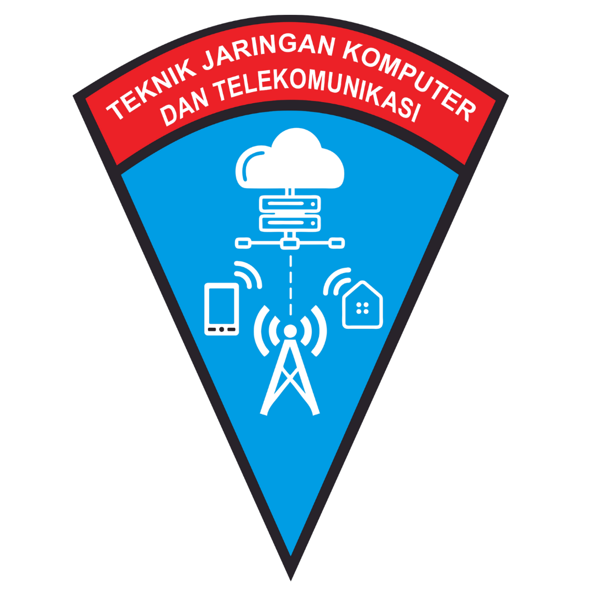

"Membangun Masa Depan Digital Melalui Keterampilan Nyata"
Teknik Komputer dan Jaringan adalah jurusan yang mempelajari perakitan,konfigurasi,dan perbaikan komputer, serta instalaso sistem operasi, jaringan internet, konfigurasi server, dan pengelolaan jaringan komputer
Selamat Datang!Halo calon siswa baru dan pengunjung setia! Website ini merupakan portofolio digital dari jurusan Teknik Komputer dan Jaringan (TKJ) di SMKN 1 Sragi. Kami berkomitmen mencetak lulusan yang siap kerja di bidang infrastruktur jaringan, administrasi server, dan teknisi komputer handal.
|
📢 Pengumuman TerbaruPPDB Online Dibuka! Jadwal Ujian Praktik: Lihat Detail Kontak → |